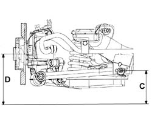

4420C80 Rear suspension CAMBER ROD - R.R.
- Path
- Procedures > 44 SUSPENSION AND WHEELS > 4420 REAR SUSPENSION > 4420C ANTI-ROLL BAR/SUSPENSION RODS REAR > 4420C80 Rear suspension CAMBER ROD - R.R.
- Kind
- repair procedure (removal / refitting; the operation number is the code)
- Applies to
- all engines; all production periods
- Interactive page
- https://sloeber94.github.io/elrnDB-lThss/en/#/177973
Applies to: all engines; all production periods
 Removing
Removing
 Refitting
Refitting- Position the vehicle on a lift.
See in Op. 4450B13 Rear WHEELS (two) - R.R.
See in Op. 7055B45 Right rear wheel arch liner - R.R.
See in Op. 1076B20 Rear exhaust SILENCER - R.R.
See in Op. 4420D10 REAR SUSPENSION AXLE - R.R.
See in Op. 4420C82 Rear suspension CAMBER ROD - R.R. WITH SUSPENSION CROSSMEMBER REMOVED
Applies to: all engines; all production periods
Refitting
RemovingSee in Op. 4420C82 Rear suspension CAMBER ROD - R.R. WITH SUSPENSION CROSSMEMBER REMOVED
See in Op. 4420D10 REAR SUSPENSION AXLE - R.R.
See in Op. 1076B20 Rear exhaust SILENCER - R.R.
See in Op. 7055B45 Right rear wheel arch liner - R.R.
See in Op. 4450B13 Rear WHEELS (two) - R.R.
- Place the vehicle in Standard "A" conditions, in other words with the vehicle mass complete, spare wheel, tool kit, all supplies and accessories (oil, engine coolant, etc.) and a full fuel tank.
- Check that the tyre inflation pressure is correct.
- Position the vehicle on a support so that the wheels are resting on the ground.
Applies to: engines: 2.4 20V; all production periods
- Check that after the vehicle has been placed in standard "A" conditions, the measurement "D"-"C" corresponds to the figure given in the table below.
 | Subject | Value |
|---|---|---|
. | Rear wheel geometry | mm |
- | D - C | 21 ± 5 |
- | Standard A | - |

Applies to: engines: 2.4 JTD 10V; all production periods
- Check that after the vehicle has been placed in standard "A" conditions, the measurement "D"-"C" corresponds to the figure given in the table below.
| Subject | Value |
|---|---|---|
. | Rear wheel geometry | mm |
- | D - C | 21 ± 5 |
- | Standard A | - |
Applies to: engines: 3.0 V6, 3.2 V6; all production periods
- Check that after the vehicle has been placed in standard "A" conditions, the measurement "D"-"C" corresponds to the figure given in the table below.
| Subject | Value |
|---|---|---|
. | Rear wheel geometry | mm |
- | D - C | 21 ± 5 |
- | Standard A | - |
Applies to: engines: 2.0 TB; all production periods
- Check that after the vehicle has been placed in standard "A" conditions, the measurement "D"-"C" corresponds to the figure given in the table below.
| Subject | Value |
|---|---|---|
. | Rear wheel geometry | mm |
- | D - C | 21 ± 5 |
- | Standard A | - |
Applies to: engines: 2.0 TB; all production periods
- Check that after the vehicle has been placed in standard "A" conditions, the measurement "D"-"C" corresponds to the figure given in the table below.
| Subject | Value |
|---|---|---|
. | Rear wheel geometry | mm |
- | D - C | 21 ± 5 |
- | Standard A | - |
Applies to: all engines; all production periods
- Tighten the bolts fixing the rod to the steering knuckle to torque.
 | Value - daNm | Fastening | Component | Ø |
|---|---|---|---|---|
. | (Steering knuckle) 11 | Bolt | HOUSING LINK | M12X1.25 |
- Tighten the bolts fixing the camber rod to the rear axle to torque.
| Value - daNm | Fastening | Component | Ø |
|---|---|---|---|---|
. | (Crossmember side) 9 | Nut | HOUSING LINK | M12X1.25 |
Topics linked from this page (6)
- 1076B20 Rear exhaust SILENCER - R.R.
- 4420C82 Rear suspension CAMBER ROD - R.R. WITH SUSPENSION CROSSMEMBER REMOVED
- 4420D10 REAR SUSPENSION AXLE - R.R.
- 4450A40 REAR WHEEL GEOMETRY - Check using optical equipment - Includes rear wheel toe-in adjustment if necessary
- 4450B13 Rear WHEELS (two) - R.R.
- 7055B45 Right rear wheel arch liner - R.R.